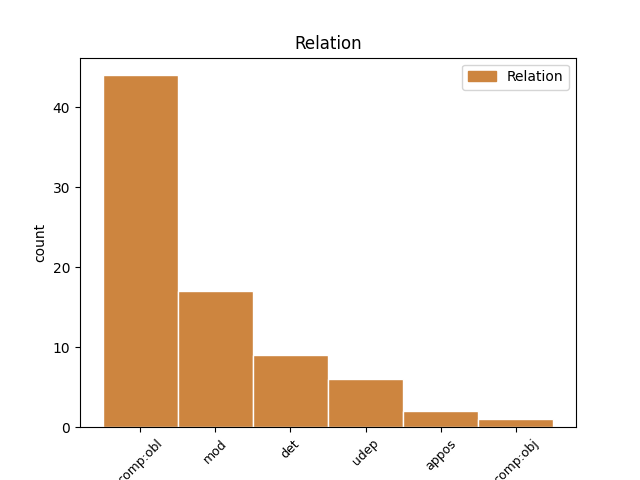
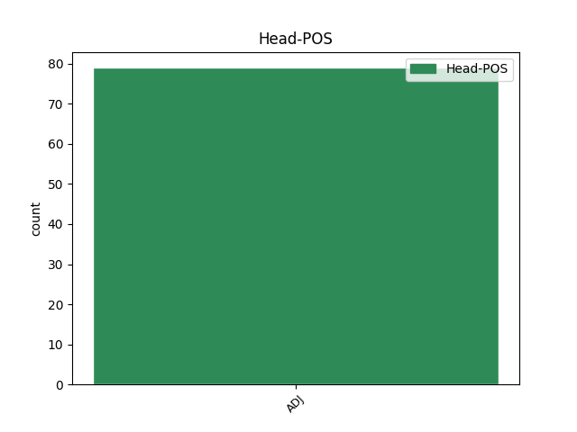
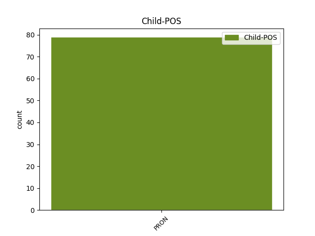

Distribution of features within this leaf



Agreement Rules sorted by frequency.
- When the dependent token is the oblique complements(comp:obl) of the head token, and the head token is ADJ and the dependent token is PRON.
1 аже _ _ _ _ 0 _ _ _
2 будть _ _ _ _ 0 _ _ _
3 в _ _ _ _ 0 _ _ _
4 дому _ _ _ _ 0 _ _ _
5 дѣти _ _ _ _ 0 _ _ _
6 мали _ _ _ _ 0 _ _ _
7 а _ _ _ _ 0 _ _ _
8 не _ _ _ _ 0 _ _ _
9 джи _ _ _ _ 0 _ _ _
10 сѧ _ _ _ _ 0 _ _ _
11 будть _ _ _ _ 0 _ _ _
12 сами _ _ _ _ 0 _ _ _
13 собою _ _ _ _ 0 _ _ _
14 печаловати _ _ _ _ 0 _ _ _
15 а _ _ _ _ 0 _ _ _
16 мт҃и _ _ _ _ 0 _ _ _
17 имъ _ _ _ _ 0 _ _ _
18 пѡидеть _ _ _ _ 0 _ _ _
19 за _ _ _ _ 0 _ _ _
20 мужь _ _ _ _ 0 _ _ _
21 то _ _ _ _ 0 _ _ _
22 кто _ _ _ _ 0 _ _ _
23 имъ и PRON Pp Case=Dat|Gender=Masc|Number=Plur|Person=3|PronType=Prs 24 comp:obl _ ref=99
24 ближии близъкыи ADJ A- Case=Nom|Degree=Cmp|Gender=Masc|Number=Sing|Strength=Weak 0 _ _ _
25 будеть _ _ _ _ 0 _ _ _
26 тому _ _ _ _ 0 _ _ _
27 же _ _ _ _ 0 _ _ _
28 дати _ _ _ _ 0 _ _ _
29 на _ _ _ _ 0 _ _ _
30 руцѣ _ _ _ _ 0 _ _ _
31 i _ _ _ _ 0 _ _ _
32 с _ _ _ _ 0 _ _ _
33 добыткомь _ _ _ _ 0 _ _ _
34 и _ _ _ _ 0 _ _ _
35 с _ _ _ _ 0 _ _ _
36 домомь _ _ _ _ 0 _ _ _
37 донелѣ _ _ _ _ 0 _ _ _
38 же _ _ _ _ 0 _ _ _
39 возмѡгуть _ _ _ _ 0 _ _ _
1 и _ _ _ _ 0 _ _ _
2 колоколы _ _ _ _ 0 _ _ _
3 ратныѧ _ _ _ _ 0 _ _ _
4 на _ _ _ _ 0 _ _ _
5 всѣхъ _ _ _ _ 0 _ _ _
6 стѣнахъ _ _ _ _ 0 _ _ _
7 изставити _ _ _ _ 0 _ _ _
8 да _ _ _ _ 0 _ _ _
9 коиждо кыижьдо ADJ Px Case=Nom|Gender=Masc|Number=Sing 0 _ _ _
10 ихъ и PRON Pp Case=Gen|Gender=Masc|Number=Plur|Person=3|PronType=Prs 9 mod _ ref=288v2
11 вѣдаетъ _ _ _ _ 0 _ _ _
12 и _ _ _ _ 0 _ _ _
13 хранитъ _ _ _ _ 0 _ _ _
14 свою _ _ _ _ 0 _ _ _
15 страноу _ _ _ _ 0 _ _ _
1 мр҃твыꙗ мьртвыи ADJ A- Case=Acc|Degree=Pos|Gender=Masc|Number=Plur|Strength=Weak 0 _ _ _
2 бо _ _ _ _ 0 _ _ _
3 ихъ и PRON Pp Case=Gen|Gender=Masc|Number=Plur|Person=3|PronType=Prs 1 det _ ref=294v21
4 бѧхꙋ _ _ _ _ 0 _ _ _
5 мостъ _ _ _ _ 0 _ _ _
6 и _ _ _ _ 0 _ _ _
7 лѣстница _ _ _ _ 0 _ _ _
8 ко _ _ _ _ 0 _ _ _
9 граду _ _ _ _ 0 _ _ _
1 аже _ _ _ _ 0 _ _ _
2 ли _ _ _ _ 0 _ _ _
3 пропиѥть _ _ _ _ 0 _ _ _
4 с _ _ _ _ 0 _ _ _
5 или _ _ _ _ 0 _ _ _
6 пробиѥть _ _ _ _ 0 _ _ _
7 а _ _ _ _ 0 _ _ _
8 в _ _ _ _ 0 _ _ _
9 безумьи _ _ _ _ 0 _ _ _
10 чюжь _ _ _ _ 0 _ _ _
11 товаръ _ _ _ _ 0 _ _ _
12 испортить _ _ _ _ 0 _ _ _
13 то _ _ _ _ 0 _ _ _
14 како _ _ _ _ 0 _ _ _
15 любо _ _ _ _ 0 _ _ _
16 тѣмъ тыи ADJ Pd Case=Dat|Gender=Masc|Number=Plur 0 _ _ _
17 чии чии PRON Pi Case=Nom|Gender=Masc|Number=Sing|PronType=Int 16 appos _ ref=54
18 то _ _ _ _ 0 _ _ _
19 товаръ _ _ _ _ 0 _ _ _
1 лѣпо _ _ _ _ 0 _ _ _
2 бы _ _ _ _ 0 _ _ _
3 на _ _ _ _ 0 _ _ _
4 ате _ _ _ _ 0 _ _ _
5 надежю _ _ _ _ 0 _ _ _
6 имѣ _ _ _ _ 0 _ _ _
7 ъ _ _ _ _ 0 _ _ _
8 бѹ҃ _ _ _ _ 0 _ _ _
9 ѹповающе _ _ _ _ 0 _ _ _
10 ꙗко _ _ _ _ 0 _ _ _
11 мощьнъ _ _ _ _ 0 _ _ _
12 ѥсть _ _ _ _ 0 _ _ _
13 подати _ _ _ _ 0 _ _ _
14 намъ _ _ _ _ 0 _ _ _
15 на _ _ _ _ 0 _ _ _
16 потрѣбѹ _ _ _ _ 0 _ _ _
17 ѥгоже _ _ _ _ 0 _ _ _
18 хощемъ _ _ _ _ 0 _ _ _
19 а _ _ _ _ 0 _ _ _
20 не _ _ _ _ 0 _ _ _
21 тако _ _ _ _ 0 _ _ _
22 невѣрьствовавъше _ _ _ _ 0 _ _ _
23 сътворити _ _ _ _ 0 _ _ _
24 ѥгоже иже PRON Pr Case=Gen|Gender=Neut|Number=Sing|PronType=Rel 27 comp:obj _ ref=42
25 не _ _ _ _ 0 _ _ _
26 бѣ _ _ _ _ 0 _ _ _
27 лѣпо лѣпыи ADJ A- Case=Nom|Degree=Pos|Gender=Neut|Number=Sing|Strength=Strong 0 _ _ _
Disagree Examples:
1 ано _ _ _ _ 0 _ _ _
2 нас мы PRON Pp Case=Gen|Gender=Masc|Number=Plur|Person=1|PronType=Prs 3 mod _ ref=4
3 мног мъногыи ADJ A- Case=Nom|Degree=Pos|Gender=Neut|Number=Sing|Strength=Strong 0 _ _ _
1 не _ _ _ _ 0 _ _ _
2 любо любыи ADJ A- Case=Nom|Degree=Pos|Gender=Neut|Number=Sing|Strength=Strong 0 _ _ _
3 ми азъ PRON Pp Case=Dat|Gender=Masc|Number=Sing|Person=1|PronType=Prs 2 comp:obl _ ref=67.21
4 есть _ _ _ _ 0 _ _ _
5 в _ _ _ _ 0 _ _ _
6 киевѣ _ _ _ _ 0 _ _ _
7 быти _ _ _ _ 0 _ _ _
1 аще _ _ _ _ 0 _ _ _
2 не _ _ _ _ 0 _ _ _
3 створимъ _ _ _ _ 0 _ _ _
4 мира _ _ _ _ 0 _ _ _
5 со _ _ _ _ 0 _ _ _
6 цр҃мъ _ _ _ _ 0 _ _ _
7 а _ _ _ _ 0 _ _ _
8 увѣсть _ _ _ _ 0 _ _ _
9 ц҃рь _ _ _ _ 0 _ _ _
10 яко _ _ _ _ 0 _ _ _
11 мало малыи ADJ A- Case=Nom|Degree=Pos|Gender=Neut|Number=Sing|Strength=Strong 0 _ _ _
12 насъ мы PRON Pp Case=Gen|Gender=Masc|Number=Plur|Person=1|PronType=Prs 11 mod _ ref=72.1
13 есть _ _ _ _ 0 _ _ _
14 пришедше _ _ _ _ 0 _ _ _
15 ѡступѧть _ _ _ _ 0 _ _ _
16 ны _ _ _ _ 0 _ _ _
17 въ _ _ _ _ 0 _ _ _
18 градѣ _ _ _ _ 0 _ _ _
1 и _ _ _ _ 0 _ _ _
2 есть _ _ _ _ 0 _ _ _
3 ми азъ PRON Pp Case=Dat|Gender=Masc|Number=Sing|Person=1|PronType=Prs 4 comp:obl _ ref=110.11
4 любо любыи ADJ A- Case=Nom|Degree=Pos|Gender=Neut|Number=Sing|Strength=Strong 0 _ _ _
5 вѣра _ _ _ _ 0 _ _ _
6 ваша _ _ _ _ 0 _ _ _
7 и _ _ _ _ 0 _ _ _
8 служенье _ _ _ _ 0 _ _ _
9 еже _ _ _ _ 0 _ _ _
10 бо _ _ _ _ 0 _ _ _
11 ми _ _ _ _ 0 _ _ _
12 сповѣдаша _ _ _ _ 0 _ _ _
13 послании _ _ _ _ 0 _ _ _
14 мниа _ _ _ _ 0 _ _ _
15 мужи _ _ _ _ 0 _ _ _
1 ѥгда _ _ _ _ 0 _ _ _
2 же _ _ _ _ 0 _ _ _
3 бываѥть _ _ _ _ 0 _ _ _
4 годъ _ _ _ _ 0 _ _ _
5 молитвы _ _ _ _ 0 _ _ _
6 мало малыи ADJ A- Case=Nom|Degree=Pos|Gender=Neut|Number=Sing|Strength=Strong 0 _ _ _
7 ихъ и PRON Pp Case=Gen|Gender=Masc|Number=Plur|Person=3|PronType=Prs 6 mod _ ref=170.17
8 ѡбрѣтаѥт _ _ _ _ 0 _ _ _
9 сѧ _ _ _ _ 0 _ _ _
10 в _ _ _ _ 0 _ _ _
11 цр҃кви _ _ _ _ 0 _ _ _